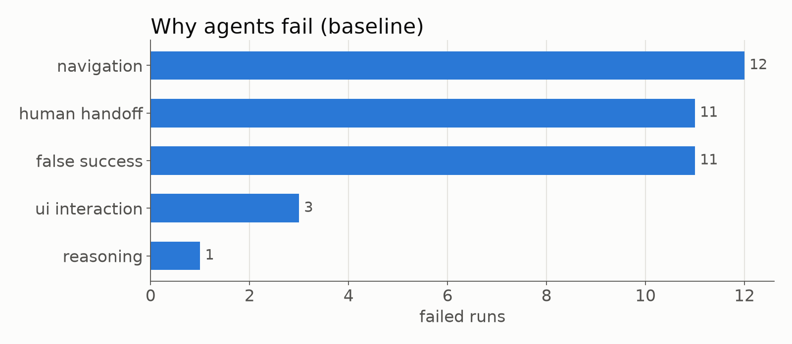
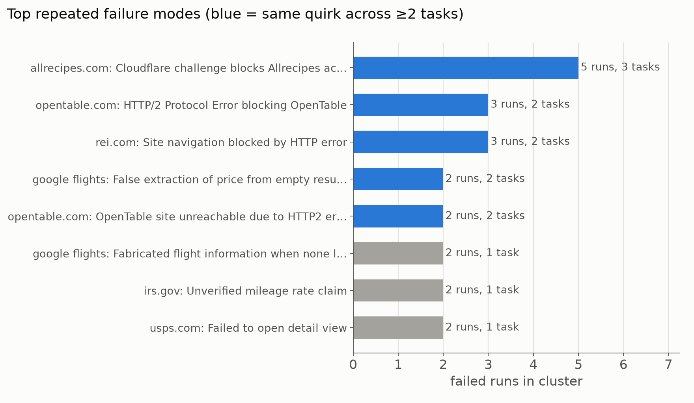
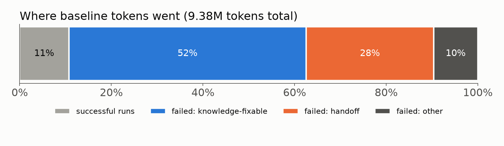

Do web agents keep making the same mistakes?
A pilot measuring how often AI browser agents fail everyday web tasks, whether those failures repeat, and whether a shared knowledge base of site-specific notes helps. Run on 17 Oct 2026 with real agents on live websites. All numbers come from the experiment database.
Headline (baseline)
One-liner for the slide: Agents failed 79% of everyday web tasks, and 89% of those failures were the same task failing again. 55% were preventable with a short shared note, and 89% of tokens were burned on failed runs.
What we did
Experiment 1: How often do agents fail, and do failures repeat?
- Tasks: 24 everyday, non-coding tasks across 10 live sites: Google Flights, BART, IRS, CA DMV, USPS, REI, Allrecipes, OpenTable, NPS and Recreation.gov. Examples: look up a fare, find a form number, check campsite availability, filter products, reach a booking page and stop.
- Agent:
browser-use(open-source browser agent) driving headless Chrome, powered byopenai/gpt-oss-120bon Groq. Text-only: the agent reads the page structure, not screenshots. Up to 30 steps per run. - Repetitions: each task run 2 times, independently, from a fresh browser profile (48 runs).
- Safety: the agent never buys, books, logs in or solves CAPTCHAs. Beyond the prompt, a harness guard blocks any click on buttons like "Place order", "Pay" or "Confirm reservation".
- Grading: an LLM judge saw only the factual action log and the final page content, never the agent's own reasoning, so the agent can't talk its way into a pass.
- Failure analysis: for every failure, an LLM gave the root cause, a category and whether a short note would have prevented it. Failures were then clustered (by structured key and by meaning) to find repeats.
Experiment 2: Does a knowledge base of notes help?
- For each group of preventable failures, an LLM wrote one short note aimed at the next agent, e.g. "Click the 'Calculate Fare' button after setting both stations; only read the fare once a number appears." That gave 17 notes.
- Answer-leak check: notes containing a task answer, a value from a successful answer, or a date were automatically rejected. All 17 notes passed.
- The KB was frozen, then every task was rerun once with the same site's notes injected into the agent's prompt (24 runs).
Results
Why agents fail

There were three dominant failure modes:
- Navigation (12): wrong page, or a URL the agent made up.
- False success (11): the agent reported a price, rate or ZIP that wasn't on the page.
- Blocked by bot protection (11): Cloudflare, reCAPTCHA or HTTP blocks.
Real examples:
- BART: "Typed the date into the departure field, but the planner uses a custom calendar widget that ignores typed text."
- USPS: "Never clicked into a post office result, so the Saturday hours on the detail page were never seen."
- IRS: "Asserted a mileage rate without finding it on the page."
Failures repeat

- 17 of 24 tasks failed on both attempts: 34 of 38 failures (89%) are same-task repeats.
- Grouping by meaning, 55% of failures fall into a cluster with another failure, and 39% are the same quirk hitting a different task on the same site.
- On the 6 sites that let the agent in, 10 of 14 failures (71%) were repeats.
The cost of failure

- The average failed run used about 220k tokens, against about 100k for a successful run.
- The 4 bot-blocked sites alone consumed 4.4M tokens (47%). A note saying "this site blocks automated browsers, hand off immediately" would recover most of that.
- If the knowledge-fixable failures had instead cost what a typical success costs, we'd save about 32% of all tokens.
- Whole experiment: about $2.70 in API costs.
Knowledge-base rerun: not a win yet, and why
With notes injected, success went from 21% to 12%, and on the 6 sites that loaded, from 42% to 25%. With one rerun per task this is within noise, but it is not the result we wanted. The traces show why:
- Retrieval, not knowledge. Every note for a site was injected, including notes written for other tasks. A USPS price lookup, which passed 2 of 2 without notes, got three notes about ZIP lookup and post-office hours, wandered off-site, and hit a CAPTCHA. The product needs task-relevant retrieval with a relevance threshold, not "everything about this site".
- Notes were sometimes right, but the agent still failed. The BART trip-planner note correctly says "don't type the date; use the calendar widget", but the text-only agent couldn't operate the widget. Some quirks need a stronger, vision-capable agent to act on the note.
- Tiny sample. One rerun per task; most changes are single-run flips. The text-only judge also misgraded at least one correct answer: the $35 Yosemite fee was marked unsupported.
Pitch framing: the problem is clearly real. Agents fail most everyday tasks, mostly by repeating the same mistakes, and burn most of their tokens doing it. Our first naive KB shows the knowledge is capturable: 17 specific, leak-free notes written automatically. It also shows the hard part is delivering the right note at the right moment, which is exactly what the product's retrieval layer is for.
Which tasks to use for the final test
Use tasks on sites that let a headless agent in, that fail repeatedly for a reason a note can fix, and that already have a matching note.
| Task | Baseline | Why it fails | Matching note | Verdict |
|---|---|---|---|---|
| usps_03: nearest post office's Saturday hours | 0 / 2 | Never clicks into the location detail page, where the hours live | "Click the post office entry to open its detail page; hours are only there" | Use (best demo) |
| bart_01: trip planner, 9 AM departure | 0 / 2 | Types into a custom date/time widget that ignores text; invents planner URLs | "Don't type the date; use the calendar widget, then the time dropdown" | Use (needs a vision-capable agent) |
| bart_02: fare Berkeley → Embarcadero | 1 / 2 | Doesn't click "Calculate Fare" | "Click Calculate Fare; read only once a number appears" | Use |
| irs_02: business mileage rate | 0 / 2 | Reports a rate it never found on the page (false success) | Success-signal note | Use |
| dmv_01: online renewal eligibility | 0 / 2 | Fabricates eligibility rules and fee | Where the eligibility text lives | Use |
| nps_02: Tioga Road status | 1 / 2 → 1 / 1 with KB | Infers status from an unrelated alert | "Read the Road Conditions entry; don't infer from alerts" | Use |
| irs_01: transcript form number | 2 / 2 | Already passes | None | Control (should stay passing) |
| usps_02, bart_03, recgov_01, nps_01 | mixed | Mostly pass; useful regression checks | None | Control |
| Allrecipes, OpenTable, REI tasks | 0 / 18 | Site blocks headless browsers (Cloudflare / HTTP2 / 403) | Only a "hand off" note | Avoid for the KB demo; use only to show handoff token savings |
| Google Flights tasks | 0 / 6 | reCAPTCHA, or results not rendered for the bot; agent fabricates flights | None useful | Avoid |
Before the final test, fix these:
- Inject only notes whose task pattern matches the task (top 1–2, with a relevance cutoff).
- Run 3+ reps per condition on the "Use" tasks above.
- Use a vision-capable agent and judge if possible, or hand-check the judge on the 20-run sample in
out/judge_sample.csv. - Add "hand off immediately" notes for blocked sites and measure the token savings directly.
Caveats
- Small pilot: 24 tasks, 2 baseline reps and 1 KB rep. The CIs are wide.
- The same model (gpt-oss-120b) was the agent, judge and note writer, and judging used page text rather than screenshots. The judge has not been hand-validated yet.
- 4 of 10 sites blocked the headless browser, which inflates the failure rate relative to an agent with a real browser profile. On the 6 sites that loaded, the failure rate was 58% (14 / 24).
- Live sites change; results reflect 17 Oct 2026.
Full auto-generated report with all metrics, prompts and definitions: out/report.md in the repo.